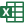

Bem-vindos!
Conecte o seu
assistente
Inteli Room
Zoox Data Revolution 2026


rmnicola.github.io/inteli-exec/zoox/conectar-e-perguntar
quem conduz · inteli

Afonso Brandão
Professor
Engenheiro de produção e civil, mestre em materiais
Doutorando em engenharia da computação
Rodrigo Nicola
Professor
Engenheiro mecatrônico, mestre pelo ITA
Veículos autônomos e aprendizado de máquina
Egon Daxbacher
Coordenador de Adm Tech
Graduado e mestre em Administração pela PUC-Rio
Doutor em Ciência da Computação
só prevê texto
VocêAche uma hora esta semana para eu revisar o orçamento.
ModeloNão tenho acesso à sua agenda. Cole aqui os seus compromissos da semana que eu procuro um horário.
ou, pior:
ModeloQue tal quinta, às 10h? Costuma ser um horário tranquilo.
Ache uma hora esta semana para eu revisar o orçamento.
ler_agenda("esta semana")
observalivre: terça 16h, quinta 8h e 14h
pensaQual tem mais folga em volta?
ageler_agenda("terça", "quinta")
observaterça 16h colada; quinta 8h livre
pensaQuinta às 8h. Reservo o horário.
agecriar_evento("quinta 8h")
observaevento criado
Reservei quinta, das 8h às 9h.
harness
Harness o aplicativo em volta do modelo
Sozinho, ele só lê e escreve texto.
as suas instruções, os documentos e a conversa
busca na web, calcula, cria arquivos e e-mails
a sua agenda, o e-mail e os sistemas da empresacom a sua permissão
ChatGPT, Gemini, Claude e Copilot são harnesses.





mão levantada
Qual você usa no trabalho?
Uma de cada vez. O passo a passo tem as quatro.
Montar e conectar
Crie o assistente, cole as instruções e ligue a sua agenda. Sem acesso? Use a agenda de exemplo.
o passo a passo
escolha ali a sua ferramenta: Claude, Gemini, ChatGPT ou Copilot
Montando
10:00
Perguntar e conferir
Peça o seu dia, a sua semana e duas janelas livres. Confira tudo na agenda.
o guia de testes
os pedidos, prontos para copiar, e o que conferir
Perguntando
10:00
Quando usar cada um
Obrigado!
Para continuar com o Inteli:
 MBA em IA e Dados
MBA em IA e Dados Programas sob medida
Programas sob medida